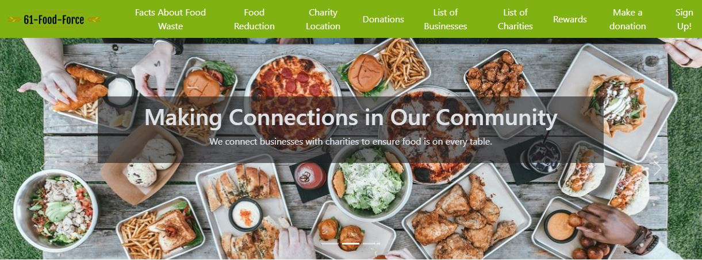
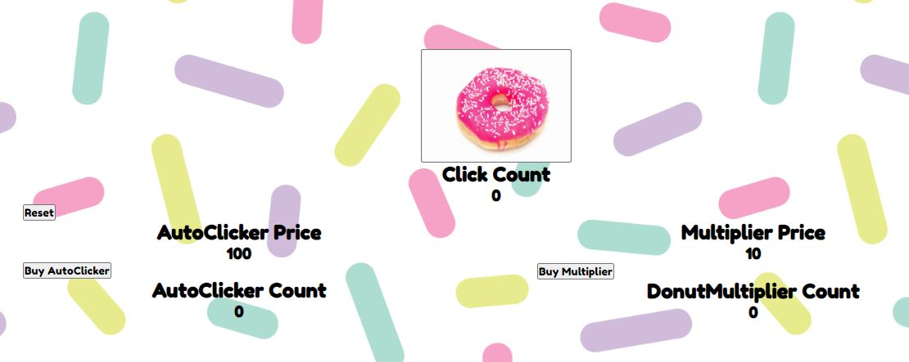
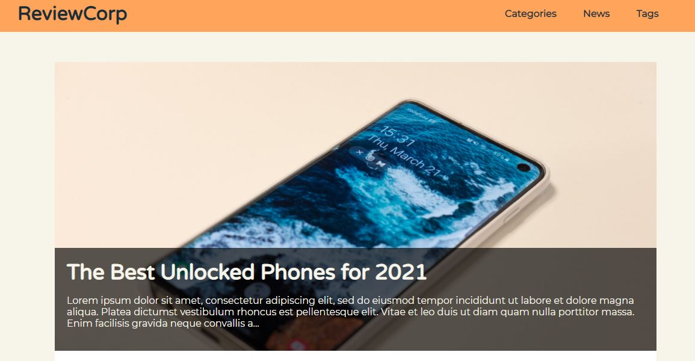

My name is Lana (rhymes with "banana"). I earned a Bachelor of Science degree in Zoology and a Master of Science degree in Environment and Natural Resources, both from Ohio State. I switched into tech after developing an interest in programming and GIS during my graduate studies. I am an entry-level software developer with experience in application development, web page design, statistical analysis, and ArcGIS software. Throughout my academic career, I have demonstrated the ability to complete long-term, multi- part projects. I am excited to continue my journey of life-long learning and problem-solving.
Skills
JavaScript • MVC • HTML • CSS • Flexbox • Grid • JSON • Restful APIs • Java • Spring • Hibernate • JPA • TDD • Agile (Scrum) • Thymeleaf • Single Page Applications (SPA) • Responsive Design /Mobile • Object Oriented Programming (OOP) • Structured Query Language (SQL) • Relational Databases • VS Code • IntelliJ • Source Control / Git • Kanban board • Pair Programming
Projects
6-1-Food Force
Java • HTML • CSS • Spring • Thymeleaf • IntelliJ • Git • GitHub • OOP
A web application that allows charities to view and accept food donations made by local businesses. The site also provides information about fighting hunger and reducing food waste.
Donut Maker
JavaScript • HTML • CSS • VS Code • Git • GitHub
A single-page application clicker game inspired by Cookie Clicker.
ReviewCorps
Java • HTML • CSS • Spring • Thymeleaf • VS Code • IntelliJ • Git • GitHub • OOP
A website dedicated to reviewing mobile phones.
Virtual Pet Application

Java • IntelliJ • Git • GitHub • OOP
A console application which allows user to create, adopt, and care for pets.
Contact Lana